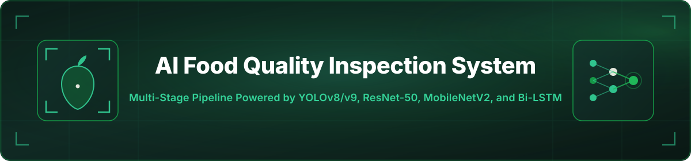
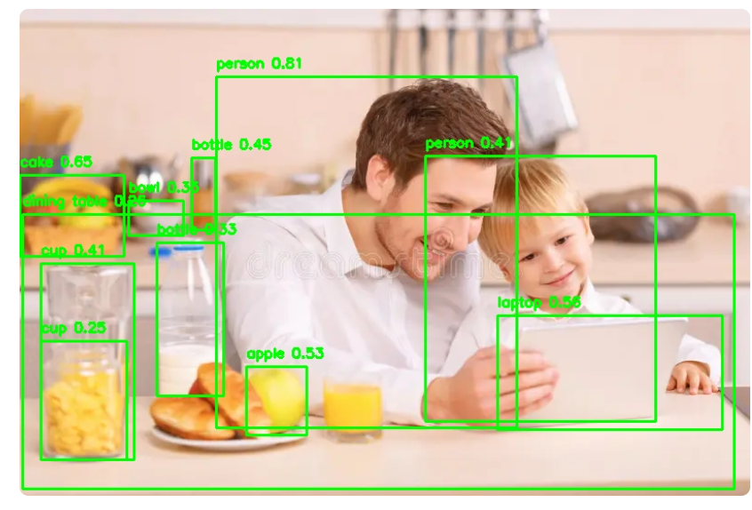
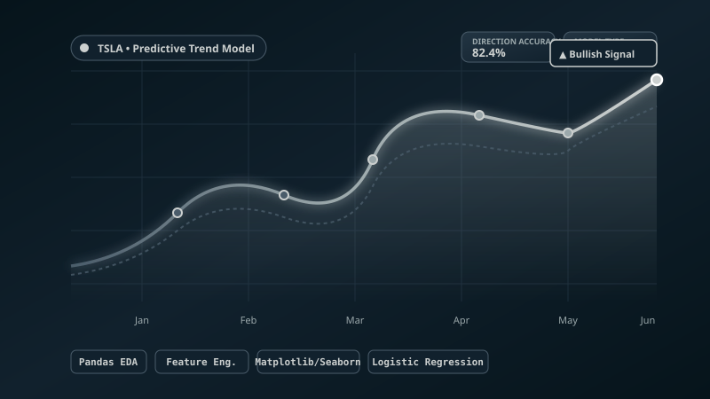

Computer Science & Engineering Graduate specializing in Data Science from RGMCET. Passionate about engineering full-stack AI solutions, multi-model computer vision pipelines (YOLOv8/v9, ResNet-50, OpenCV), and deploying high-throughput real-time dashboards with Streamlit.
Building end-to-end intelligent applications that transform complex machine learning models into intuitive, real-time user experiences.
I am a Computer Science and Engineering Graduate specializing in Data Science from Rajeev Gandhi Memorial College of Engineering and Technology (RGMCET), Nandyal. My technical focus centers around applied machine learning, computer vision, and deep learning architectures.
From engineering multi-model produce grading pipelines with ResNet-50 and YOLOv9 to architecting high-throughput real-time object tracking dashboards at 80+ FPS, I build robust, reproducible systems. I combine strong theoretical foundations in Object-Oriented Programming, Data Structures & Algorithms, and statistical modeling with modern tools like PyTorch, OpenCV, and Streamlit.
YOLOv8/v9, OpenCV color space segmentation (HSV/LAB), and Multi-Object Tracking.
Transfer learning with CNNs (ResNet50, MobileNet) and temporal sequence modeling with LSTMs.
Systematic exploratory data analysis, feature engineering, and statistical modeling with Pandas & Seaborn.
End-to-end interactive web interfaces and model backends built with Streamlit and Flask.
A targeted stack built for deep learning pipelines, computer vision inference, data analytics, and interactive software delivery.
OOP design, multi-model inference pipelines, asynchronous video capture, data manipulation, and scientific computing.
Convolutional Neural Networks (CNNs), ResNet-50 transfer learning, Bi-LSTM sequence modeling, tensor optimization, and GPU training.
YOLOv8 & YOLOv9 defect localization, real-time Multi-Object Tracking (MOT), HSV/LAB color space segmentation, webcam streaming.
Building production-grade interactive dashboards, real-time video frame rendering, confidence sliders, and telemetry visualizers.
Vectorized data transformations, missing value imputation, complex aggregations, multi-index operations, and time series wrangling.
Logistic Regression, Classification metrics (ROC-AUC, Macro-F1), cross-validation, feature scaling, and predictive analytics.
Exploratory Data Analysis (EDA), distribution modeling, correlation heatmaps, financial trend plotting, and publication-ready charts.
Complex joins, subqueries, relational database schema design, indexing, and data extraction for analytical pipelines.
Object-oriented programming principles (Inheritance, Polymorphism, Encapsulation, Abstraction), data structures, and algorithms.
Collaborative version control, branch management, GitHub Pages deployment, repository documentation, and CI/CD basics.
Semantic responsive markup, modern CSS Grid/Flexbox layouts, dark/light theme systems, and vanilla DOM manipulation.
Data Structures and Algorithms (arrays, trees, graphs, sorting), Operating Systems concepts, memory management, and process scheduling.
Featured projects built from scratch, tested with empirical benchmarks, and hosted on GitHub.

Full-stack Streamlit web application enabling real-time image, video, and webcam-based inference. Integrates a multi-model pipeline for agricultural produce grading and deterioration forecasting.

Production-ready computer vision application unifying YOLOv8, SSD MobileNet, and Faster R-CNN into an interactive Streamlit dashboard for photos, video files, and live webcam streams.

Developed a Logistic Regression classification model to predict Tesla stock price trend movements based on historical financial metrics, technical indicators, and exploratory market signals.
Professional hands-on internship background combined with rigorous university coursework in Data Science.
Demonstrated technical competencies recognized by global cloud, AI, and data science institutions.
Test interactive commands to query my background, inspect project repositories, and explore my skill matrix directly.
Interested in discussing machine learning roles, computer vision projects, or data science collaboration? Reach out directly!